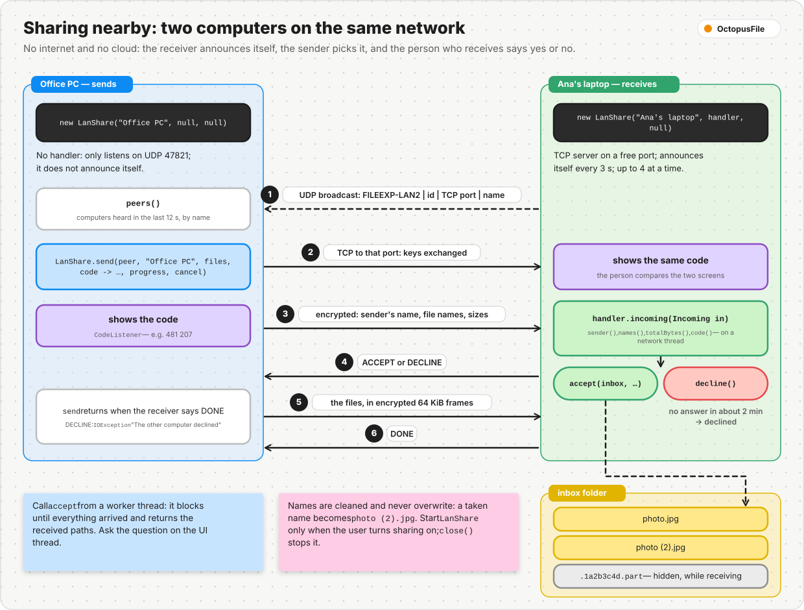
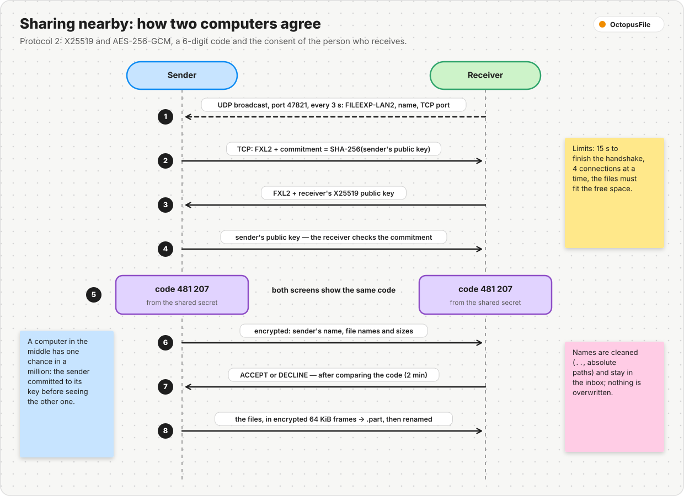
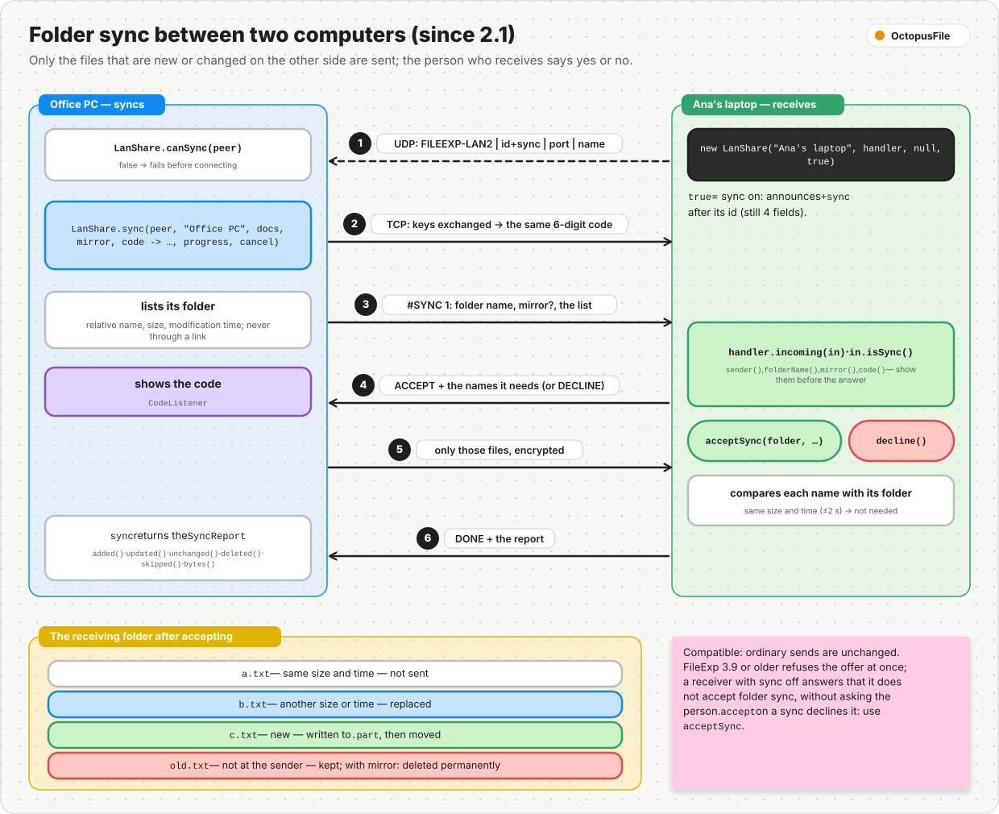

Sharing nearby (local network)

Send files and folders to another computer on the same network — no internet, no cloud, no external library.
java// receiving computer
try (LanShare receiver = new LanShare("Ana's laptop", in -> {
System.out.println(in.sender() + " sends " + in.names() + " - code " + in.code());
new Thread(() -> {
try {
in.accept(inbox, null, () -> false); // or in.decline()
} catch (IOException ex) {
ex.printStackTrace();
}
}).start();
}, null)) { // null = all network interfaces
// ...
}
// sending computer
try (LanShare lan = new LanShare("Office PC", null, null)) { // no handler: only looks for computers
LanShare.Peer peer = lan.peers().get(0);
LanShare.send(peer, "Office PC", List.of(photo), code -> System.out.println("Code: " + code), null, () -> false);
}
How it works#

| Step | |
|---|---|
| Discovery | computers that accept files announce themselves by UDP broadcast on port 47821 every 3 s; peers() lists those seen in the last 12 s |
| Key exchange | X25519 per connection (a new key every time); the sender first sends a hash of its key (commitment), receives the key of the receiver, and only then reveals its own |
| Encryption | AES-256-GCM per 64 KB frame, nonce = direction + counter (never reused) |
| Confirmation | both sides get the same 6-digit code derived from the shared secret: if the codes match, nobody is in the middle. Thanks to the commitment, a computer in the middle cannot search for keys that give the same code on both sides: it has one chance in a million |
| Consent | the receiver gets an Incoming (sender, names, total size, code) and calls accept or decline; without an answer in about 2 minutes (125 s) the transfer is declined |
| Safety | names are cleaned (.., drives, invalid characters, Windows device names such as CON or NUL, trailing dots), files go to inbox with free names (photo (2).jpg), written first to a new hidden .part file with a random name (never an existing one) |
| Limits | at most 4 incoming connections at a time (MAX_SESSIONS), 15 s to finish the handshake, the files must fit in the free space of inbox |
| Versions | protocol 2 since OctopusFile 1.3 (folder sync since 2.1, see below); a computer with protocol 1 (FileExp 3.8 and older) is still listed by peers(), and sending to it fails with "uses an older version of the sharing: update it" |
The handler is called on a network thread: show your question on the UI thread and call accept from a worker (it blocks until everything is received). Progress: the LongConsumer arguments of send and accept.
Folder sync (since 2.1)#

LanShare.sync makes a folder on the other computer like a folder of this one, sending only the files that are new or changed there. The receiver turns sync on with the four-argument constructor:
java// receiving computer: ordinary sends and folder syncs
try (LanShare receiver = new LanShare("Ana's laptop", in -> {
if (in.isSync()) {
System.out.println(in.sender() + " syncs \"" + in.folderName() + "\"" + (in.mirror() ? " (mirror)" : "")
+ " - code " + in.code());
new Thread(() -> {
try {
LanShare.SyncReport r = in.acceptSync(backups.resolve(in.folderName()), null, () -> false);
System.out.println(r.added().size() + " new, " + r.updated().size() + " updated, " + r.unchanged() + " unchanged");
} catch (IOException ex) {
ex.printStackTrace();
}
}).start();
} else {
// an ordinary send, as before: in.accept(inbox, ...) or in.decline()
}
}, null, true)) { // true = also accept folder syncs
// ...
}
// sending computer
LanShare.Peer peer = lan.peers().get(0);
if (LanShare.canSync(peer)) {
LanShare.SyncReport r = LanShare.sync(peer, "Office PC", docs, false, code -> System.out.println("Code: " + code),
null, () -> false);
System.out.println(r.sent() + " files sent, " + r.bytes() + " bytes");
}
| Capability | a receiver with sync on announces FILEEXP-LAN2|id+sync|port|name: the four fields stay, so older computers still list it; canSync(peer) reads it |
| What is sent | the sender sends the list of its files (relative name, size, modification time); the receiver answers with the ones it needs: a file with the same name (case-insensitive) and the same size and time, within 2 s (FAT drives), is not sent |
| Consent | as for files: the same 6-digit code on both sides, and the person sees who syncs, which folder and whether it is a mirror; acceptSync(folder, …) or decline(); without an answer in about 2 minutes the sync is declined |
| Replaces | accepting means a changed file (another size or another time, newer or older) is replaced by the sender's copy; new and changed files are written to a hidden .part file first and then moved into place |
| Mirror | only when the sender asks for it (mirror = true, shown by in.mirror()): files and folders the sender does not have are deleted permanently (not to the trash) |
| Safety | names are cleaned as for files; links in the receiving folder are never followed; a file in use, a folder in the way or a name used twice goes to skipped() and the rest continues |
| Result | SyncReport (the same on both sides): added(), updated(), unchanged(), deleted(), skipped(), bytes(), sent() |
Compatibility: ordinary sends are unchanged in both directions. sync to a computer without the capability fails before connecting ("cannot receive a folder sync"). A receiver that is not running with sync on answers that it does not accept folder sync, without asking the person; a computer with FileExp 3.9 or older refuses the offer at once. In the handler, in.accept(...) on a sync declines it and throws: answer a sync with acceptSync.
Firewall: the first time a computer listens, Windows may ask to allow the application on private networks. Start LanShare only when the user turns sharing on.
Examples compiled and run byLike the vault, the protocol is tested (round trip byte by byte, same code on both sides, declines, foreign connections, a key that does not match its commitment, too many connections) but not independently audited. See Security.
DocExamplesTest